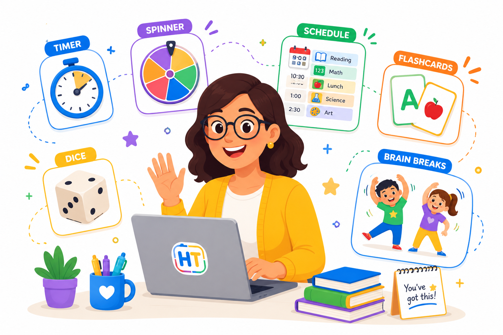

Herramientas simples para aulas más inteligentes
Un dashboard educativo con temporizadores, ruletas, dados, horarios visuales y recursos rápidos para ahorrar tiempo en clase.

12 recursos para maestros
Diseñado para Pre-K, Kinder y primaria antes de middle school.
Temporizador de Aula
Configura una cuenta regresiva visual para transiciones, centros, lectura y actividades.
Abrir herramienta →Cronómetro
Mide el tiempo durante juegos, retos, rutinas y actividades físicas.
Abrir herramienta →Ruleta de Nombres
Pega los nombres de tus estudiantes y elige al azar quién participa.
Abrir herramienta →Generador de Equipos
Crea equipos al azar para juegos, centros y trabajo colaborativo.
Abrir herramienta →Dados Virtuales
Lanza dados virtuales para matemáticas, juegos, centros y actividades rápidas.
Abrir herramienta →Número Aleatorio
Genera números al azar para participación, juegos de matemáticas y decisiones.
Abrir herramienta →Selector Sí / No
Toma decisiones rápidas de sí o no para juegos y dinámicas.
Abrir herramienta →Ruleta de Premios
Gira una ruleta de premios con incentivos positivos para la clase.
Abrir herramienta →Medidor de Ruido
Usa un medidor visual para ayudar a monitorear el nivel de ruido.
Abrir herramienta →Horario Visual
Crea un horario visual sencillo y marca las actividades completadas.
Abrir herramienta →Tarjetas Educativas
Practica palabras, letras, números, vocabulario y conceptos de repaso.
Abrir herramienta →Pausas Activas
Genera pausas de movimiento para ayudar a reenfocar a los estudiantes.
Abrir herramienta →